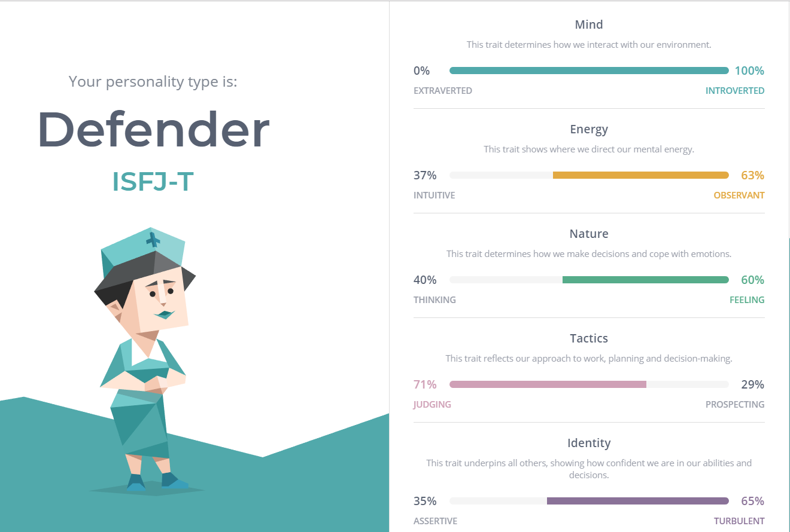
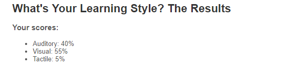
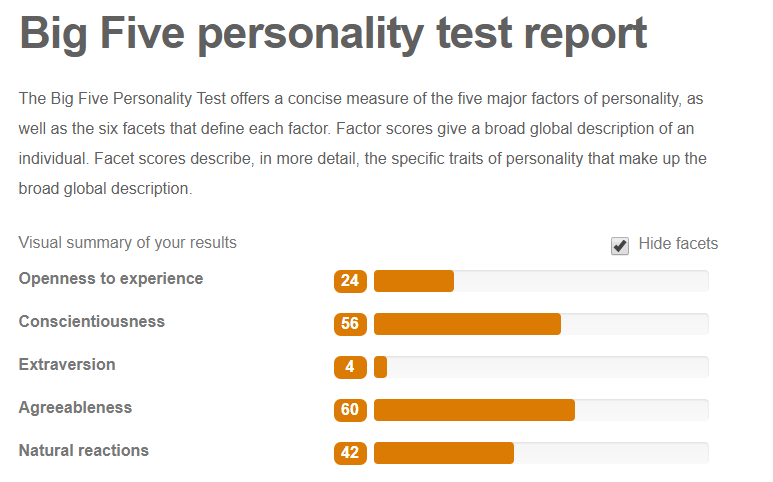

About me
I am 25 year old currently studying IT at RMIT university. I love reading and video games and relaxing with all my pets. I live in country
victoria on a farm with my boyfriend and his family. I grew up in north melbourne with my family and spent a lot of time practicing sports like karate
and gymnastics.
Education
I finished high school at 17 and began a degree in biological sciences, unfortunately, due to a issue with my legs and my diabetes I was rendered
unable to complete this study in the 3rd year due to being wheelchair bound. Since then I have been going to may different medical appionentments and trying
to find something new to do. I chose IT as it is a subject that has always interested me, I have many memories of putting together PC's out of spare and
hand me down parts and playing games with friends. I am hopeful that I will be able to find something within IT that interests me and that I can
make a career out of. Being able to study online at RMIT made it a lot easier as living so far from a town and being unable to drive, i had no way to get
to any classes.
Briggs-Myers Test
 As a defender type personality, teamwork should not be an issue for me, as I prefer to help others and let them take the lead. However, having suck a low
intraversion score means I struggle to speak to others and will often let my ideas slip by the group as I dont wish to speak up. Other traits of a defender incule
being meticulous, analitical and hard working, all useful in the job force. I
Learning Styles Test
 As a visual learner, I learn and work best by being able to read and look at what i am working on at the time. I like to use charts and books and written
instructions in order to work most effectively. In IT this will be useful as a lot of work involves looking at a screen and working off what you can see, rather than
vocal or physical interactions
Big 5 Test
 Again, my big 5 personality test highlighted the fact that I am rather introverted and agreeable. In a team this is still rather useful as I tend to follow the
leader and get work done when requested.